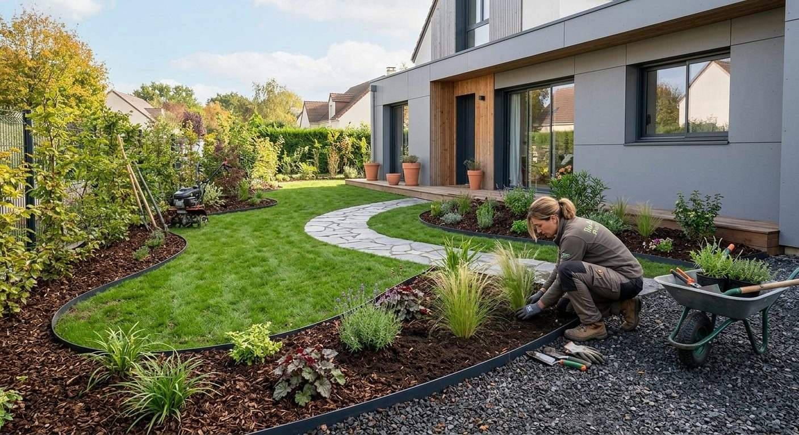

Prestations
Créer, aménager, entretenir : votre jardin, du projet au suivi.
Garden City 78 intervient en aménagement paysager depuis Maisons-Laffitte, dans les Yvelines : création, aménagement et entretien de jardins.



Créer

Donner forme à votre extérieur.
Aménagement extérieur
Un extérieur pensé pour vous
Garden City 78 vous accompagne dans l'aménagement de vos extérieurs, selon votre terrain et vos envies.
- Échange sur votre projet
- Solutions adaptées à votre terrain
- Devis établi sur demande
Création de jardin
Du terrain au jardin
L'entreprise intervient sur la création d'espaces verts, à partir de votre demande.
- Projet défini avec vous
- Végétaux et matériaux à choisir
- Précisions lors du devis
Entretenir

Un jardin suivi dans la durée.
Entretien de jardin
Un suivi régulier
Garden City 78 propose l'entretien de jardins : une prestation à définir ensemble selon votre besoin.
- Besoin défini avec vous
- Fréquence à convenir
- Devis sur demande
Espaces verts
Des espaces verts soignés
Aménagement et suivi d'espaces verts : décrivez votre situation pour un devis adapté.
- Situation à décrire
- Échange par téléphone
- Devis adapté à votre cas
Contact
Un projet en tête ? Parlons-en.
Décrivez votre besoin à Garden City 78 pour préparer votre devis.